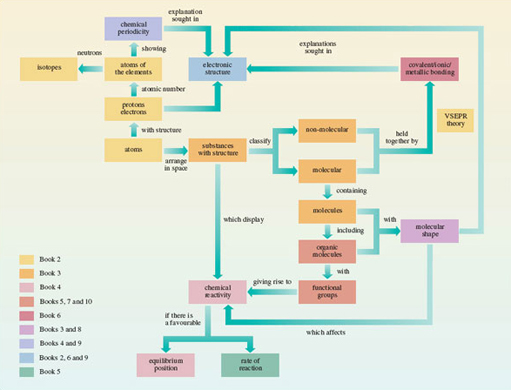

Conclusion¶
Figure 55 is a conceptual diagram that summarises this course. Molecules are made of atoms, so it was with atoms, to the left of Figure 55, that we began. Early in <a xmlns:str="http://exslt.org/strings" href="">Section 1</a> they acquired a structure with a positively charged nucleus surrounded by negatively charged electrons. To a chemist, the most important property of an *atom* is the number of positive charges in its nucleus. This *atomic number* distinguishes one chemical element from another: atoms with the same atomic number are atoms of the same chemical element. This is true even when those atoms have different numbers of *neutrons* in their nuclei. They are then said to be *isotopes* of the same chemical element.
Having labelled atoms with a chemical symbol for the elements that they represent, we then looked, in the rest of Section 1, at how atoms combine with each other. Combination can occur with other atoms of the same element; this yields the elements that are familiar to us as chemical substances. Alternatively, combination can occur between atoms of different elements when a chemical compound is produced. In both cases, it proved useful to look at the distribution of the atoms in space. This led to a classification of chemical substances into molecular and non-molecular types. Molecular substances contained discrete molecular units well separated from other units of the same formula. For non-molecular substances, this separation could not be made.
In Section 2, atomic number was exploited again: when the chemical elements are laid out in order of atomic number, elements with similar properties appear at regular intervals. This chemical periodicity is represented by Periodic Tables, which reveal many regularities in chemical properties. This course is concerned especially with the typical elements, and therefore with the mini-Periodic Table containing just this sub-set. To explain chemical periodicity, we looked at the arrangement of the negatively charged electrons around the positively charged nuclei of the different elements. This was done in Section 3. The electronic structures of the ground states of atoms were represented both by electronic configurations, which allocate electrons to sub-shells, and by box diagrams, which also show the spin of the electrons and the number of atomic orbitals within each sub-shell. It transpires that atoms in the same group of the Periodic Table have similar outer electronic configurations, and this points to explanations of chemical properties that depend on electronic structure.
These explanations require an understanding of the chemical bonding through which the atoms of an element express their valencies. In Section 4, we revisited the simplest theories of chemical bonding, which involve the sharing of electron pairs. This sharing, whose nature depends on the electronegativities of the elements, can result in ionic, covalent or metallic bonding. Structure from Section 1, and bonding from Section 4, then combined to provide a classification of chemical substances in general: they are molecular covalent, non-molecular ionic, non-molecular covalent or non-molecular metallic. Many compounds of the typical elements, including nearly all organic compounds, are of the molecular covalent type.

Figure 55 A conceptual diagram showing important ideas and the relationship between them
Click to view larger version of Figure 55
The rest of Section 4 modified and extended the ideas of shared electron pair bonds. The shared pair can sometimes come from just one of the two atoms in the bond, which is then said to be dative. For many typical element compounds, it is possible to claim both electron-pair bonds and the attainment of a noble gas configuration for the constituent atoms. In some compounds, such as benzene and ozone, the bond lengths call for a representation that is an average of two or more Lewis structures, rather than just one. This phenomenon is called ‘resonance’. This part of Section 4 was a piecemeal attempt to patch up elementary bonding theories initiated in particular by the work of G. N. Lewis. It signals the need for a fresh look at the whole subject of chemical bonding.
From chemical bonding, we turned, in Section 5, to chemical reactions at the molecular level. Some parts of a molecule are more vulnerable to attack by a particular reactant than others, a point well illustrated by the functional groups of organic molecules. The reactions of functional groups, however, are not entirely independent of their immediate molecular environment. The shapes of organic molecules also influence them. In Section 6, we pointed to the important steric influences of molecular shape, which reach a very sophisticated degree of development in the workings of enzymes. Although the three-dimensional distribution of the atoms within substances was a part of Sections 1 and 4, this explicit recognition of its importance calls for a theory of molecular shape. For the typical elements this is provided by valence-shell electron-pair repulsion theory (VSEPR theory), in which the molecular shape is dictated by repulsions between bonding and non-bonding pairs of valence electrons.
Our growing emphasis on chemical reactivity at the expense of structure and bonding became paramount in Section 7, where the question of why chemical reactions happen was analysed in terms of equilibrium positions and rates of reaction. In a closed system, a reaction with a tiny equilibrium constant cannot happen under any circumstances; but if a reaction that does not occur is found to have a large equilibrium constant, then the failure to react must be caused only by a slow rate; this can sometimes be increased by the use of a catalyst.